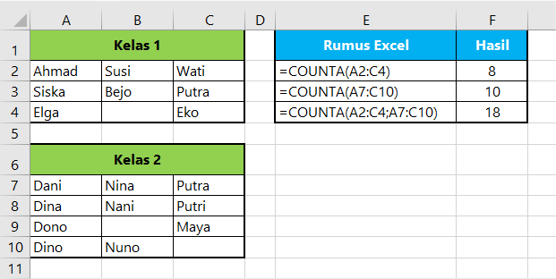

Perhatikan contoh rumus COUNT excel berikut:
Pada contoh diatas rumus COUNT digunakan untuk menghitung jumlah cell yang berisi angka pada range A2:A7. Hasilnya adalah 4. Pada range tersebut, sel yang berisi teks tidak ikut dihitung sebab fungsi COUNT pada excel hanya menghitung data numeric saja.
Jika menggunakan fungsi COUNT untuk menghitung banyak cell yang berisi Angka, dan Sel yang bernilai Numerik baik dalam format Desimal, Akunting, Tanggal atau Waktu akan bisa terhitung.
Perhatikan contoh rumus count di excel berikut:
Jika argumen berupa array atau referensi sel, maka rumus COUNT hanya akan menghitung angka dalam array atau referensi.
Sel kosong, nilai logika, teks, atau nilai error dalam array atau referensi tidak dihitung.
Pada rumus COUNT dibawah ini, berisi teks dan error yang tidak bisa dihitung.
Perhatikan contoh dibawah ini:
Seperti contoh dibawah ini jika kita masukkan nilai logika (TRUE/FALSE) langsung ke dalam rumus COUNT maka akan dianggap sebagai angka. Begitu pula angka yang dimasukkan dalam tanda
petik ganda (" ") yang seharusnya dianggap sebagai sebuah teks.
Berikut contohnya:
Fungsi Rumus COUNTA pada Excel digunakan untuk menghitung jumlah sel yang tidak kosong (empty) pada Range sel tertentu. Dengan rumus COUNTA kita tidak hanya menghitung sel yang berisi angka saja, sel yg
berisi teks juga akan ikut terhitung.
Contoh penggunaan rumus COUNTA di excel bisa Anda lihat pada contoh berikut:

Fungsi COUNTBLANK di Excel digunakan untuk mengetahui atau menghitung jumlah sel kosong (empty) pada rentang sel tertentu yang kita tentukan.